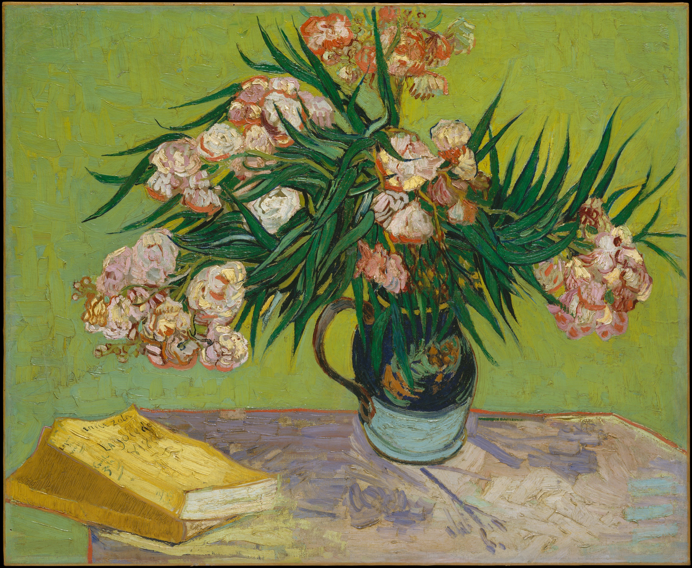

Personal
I love modern art, table tennis, tennis, cycling, and hip-hop music.
My favorite artists: Vincent van Gogh, 陈丹青, Kanye West, Christopher Nolan, 单依纯.
My favorite albums: The College Dropout, My Beautiful Dark Twisted Fantasy, choke enough, Hallucinating Love, 纯妹妹.
My favorite movies and TV shows: Interstellar, Inception, Chernobyl, 天気の子, The Odyssey.
My favorite videos:
Favorite Artworks

The Metropolitan Museum of Art, New York. Public domain (CC0).

The Metropolitan Museum of Art, New York. Public domain (CC0).